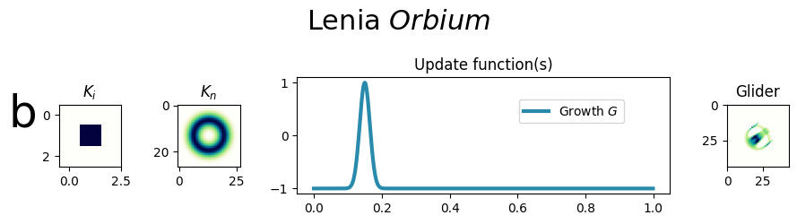
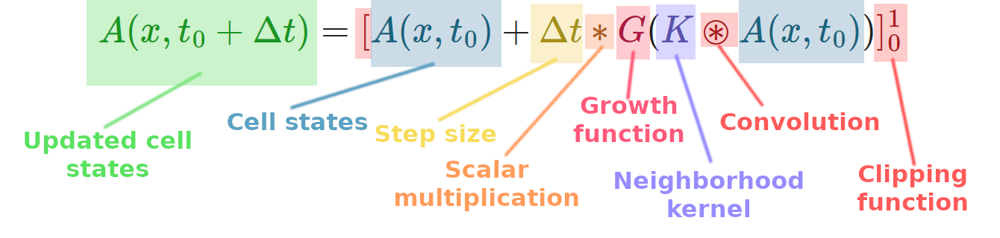

The Lenia growth function update is totalistic, depending only on the neighborhood values. The dynamics aren't entirely totalistic, however, as a memory of the previous state comes through in the state + update formula.

Classic Lenia resembles the Euler method with one key difference: a truncating or squashing function constrains values between 0 and 1.